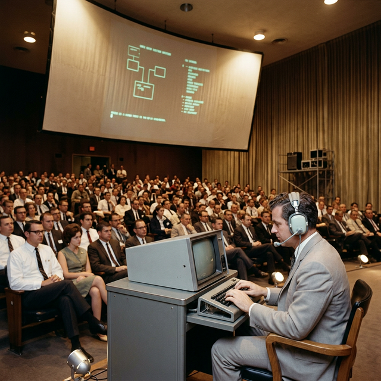
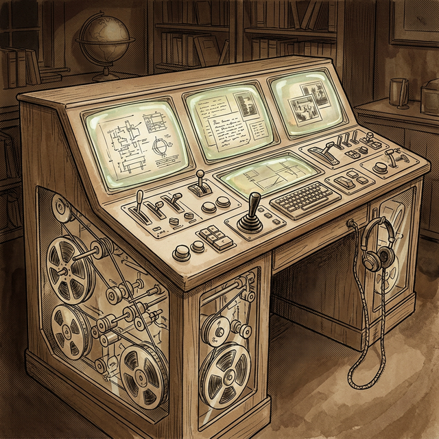

[ PROFILE_002 · VISIONARY ]
Augmenting Human Intellect · 增强人类智慧
1925.01.30 — 2013.07.02
在杜鲁门任美国总统、Sputnik 仅俄语专家才知道什么意思，中国刚刚结束抗日战争的年代，Douglas Engelbart 就想到在雷达屏上显示文字和图像，并将它们存储在电脑中，并用摇杆、按钮、键盘来操作它们。
Douglas 想增强全人类的智慧，一直在努力加速他的想法，这可能是自印刷术被发明以来文化演化历史上最重要的。
Douglas Engelbart（1925-2013）是计算机科学史上的远见卓识者，被誉为信息时代的先锋。他的一生致力于一个目标：利用计算机技术增强人类智力，以解决日益复杂的全球性问题。
二战期间，他在美国海军担任电子雷达技术员。这段经历让他直观地看到信息如何在屏幕上呈现，为他日后的愿景埋下了种子。
1951年，正值订婚阶段的 Engelbart 开始审视人生意义。他意识到世界的问题正呈指数级增长，而人类解决问题的能力却提升缓慢。他产生了一个顿悟：人们可以坐在计算机屏幕前，在一个共同的信息空间里交流、组织想法并协作。在当时计算机还主要用于数值计算的年代，这一构想被视为异端。
1962年，他发表了报告《增强人类智力：一个概念框架》，系统地阐述了通过技术与人类流程的协同进化来提升集体智商 (Collective IQ) 的理念。随后，他建立了增强研究中心 (ARC)，并主导开发了 NLS (oN-Line System) 系统。为了实现更自然的交互，他在 1963 年构思出了计算机鼠标的概念。

1968 年 The Mother of All Demos 现场
1968年12月9日，Engelbart 在旧金山进行了一场震撼世界的演示。在这场被称为所有演示之母的活动中，他首次向公众展示了鼠标、超链接、多个窗口、视频会议和实时协作编辑。这些今天看来理所当然的技术，在当时领先了时代整整30年。
尽管他的许多技术后来被施乐 PARC 和苹果等公司成功商业化，但 Engelbart 本人的职业生涯并非一帆风顺。由于他的愿景过于超前，他经常面临资金断裂和同行的不解。
晚年，他与女儿共同创立了 Engelbart 研究所，继续推广他的远景。他的一生获得了无数荣誉，包括图灵奖和美国国家技术勋章。正如他所言，技术的目的不应是简单的自动化，而应是增强人类处理复杂、紧迫问题的能力。
1945年，20岁的 Engelbart 在菲律宾担任海军雷达技术员时，读到了 Vannevar Bush 在《大西洋月刊》上发表的《As We May Think》。Bush 提出了一种叫 MEMEX 的机器：

MEMEX — 一张拥有多屏的智能办公桌
| 特征 | 描述 |
|---|---|
| 外观 | 一张办公桌 |
| 屏幕 | 桌面上有多个倾斜的半透明投影屏 |
| 输入设备 | 键盘 + 按钮组 + 杠杆组 |
| 存储介质 | 改良微缩胶卷 |
| 容量 | 每天存入5000页，需数百年才能装满 |
🔑 关键设计
信息的价值不在于它被存在哪里，而在于它和什么东西连在一起。
Memex
的设计哲学是：机器负责记住和追溯，人负责看见和连接。
Bush 提到一个新职业——Trail Blazer（路径开拓者），他们乐于通过庞大的公共记录建立有用的路径。门徒拿到的不只是大师写了什么，而是大师的思维路径本身。这是 Bush 对自动联想问题给出的1945年式回答：用人类专家的智慧去编织联想网络，然后通过复制和分享，让这种智慧可以被继承和叠加。
核心是使用边缘打孔卡（edge-notched cards）。每张卡片是一个思想内核（thought kernel），记录单一的数据片段、想法、事实或概念。
你的大脑 / 研究课题 │ ├── 卡片组 A（关于"AI认知"）← 一个主题一叠卡 │ ├── 卡片001：想法X │ ├── 卡片002：来自某论文的观点Y │ └── 卡片003：自己的疑问Z │ ├── 卡片组 B（关于"教育方法"） │ └── ... │ └── 每组都有一张「主码卡」← 相当于这组的索引字典
把针穿过对应分类的孔洞，举起来抖一抖——打了这个孔的卡片会落下来。「针」就是搜索引擎。
弥补人脑在复杂问题中的容量限制。脑子里冒出什么就写什么，一个想法一张卡，不管顺序。
1950年，25岁的他服兵役回来结婚。他突然意识到自己已经没有目标了。他在大萧条中长大，从小被灌输的目标——上大学、稳定的工作、结婚——现在已经全部做到了。
他开始推理，往后余生大约550万分钟的工作时间，应该投资到什么中去？他想到了 Memex 机器：
专注于自己的事业，致力于让世界变得更美好。
任何旨在使世界变得更美好的努力，都需要有组织的努力，利用所有人的集体智慧。
如果你能显著改进我们的做法，你就会加快地球上所有解决重要问题的努力。
电脑可以成为显著提高这种能力的载体。
来自 Bret Victor 提到了解 Doug Engelbart 最重要的问题。
当今世界最大的问题：人类的人口和总产值正以可观的速度增长，但其问题的复杂性增长更快。但人类智力的当前水平不是天花板，而只是历史的一个截面。一个受到铅笔、纸张、线性语言和缺乏系统性方法所冻结在此的截面。
| 增强智能的手段 | 定义 |
|---|---|
| Artifacts（工具） | 专为人类舒适、物品或材料的操作 + 符号操作而设计的物理对象 |
| Language（语言） | 个体将其对世界的建模概念以及操纵这些概念的符号 |
| Methodology（方法论） | 问题求解活动用到的方法、程序、策略等 |
| Training（训练） | 使人类在使用前3类手段方面的技能达到操作有效性所需的条件化训练 |
想法不再是纸上的线性文字，而是可以被拆解、重组、链接、分层、从不同角度审视的活的结构。像雕塑家对着黏土工作——智力工作者应该能对着自己的概念结构工作。
线性文字是人类思维的枷锁。我们的概念本质上是多维网络。他想创造一个符号形式真正匹配思维形式的世界，让人可以直接操作 n 维的概念结构。
三个增强的人协作，效力可能是未增强三人的十倍。争论在结构中留痕，由论证本身裁决，不同学科的人可在概念界面精确对齐术语。
研究员开发增强工具 → 用这些工具增强自己 → 增强后的自己开发更好的工具 → 循环。人类智力提升的速度本身也会被加速。
💡 Joe 演示
一个虚构叙事环节（位于《增强人类智力》第三部分）。1962年的 Joe 在纸面上做到的事，1968年的 Engelbart 通过真实的 NLS 系统变成了现实。
在屏幕上快速输入和组织文字。支持自动换行、一键查词典/同义词/反义词、自定义缩写。用专属键盘，打字速度达到每分钟180词——比说话还快。
用光笔点选任意词句瞬间删除，文本自动重排。选中文字光笔一指新位置内容瞬间"飞"过去。全局替换、并排对比——像雕刻家对着泥胎随手捏形。
真实的思维不是线性的 A→B→C→D，而是一张网。用光笔建立前提链接和影响链接，系统自动生成网络图，可在网络图和文本之间随时切换。
所有笔记、草图、计算、文献摘录全是同一个符号结构的组成部分。文献像"橙子"，你把"果汁"提取出来，真正有价值的部分已融入你的结构。
不只是内容可以结构化，做事的过程本身也可以被设计、记录、优化。你永远知道下一步该做什么。
多人可同时在同一个符号结构上工作。意见分歧？把反驳意见直接挂在对方论点旁边。跨学科术语壁垒大大降低——系统可自动将对方用词替换成你熟悉的术语。
当 AI 获得新工具（如代码执行器），这不仅仅是增加了一个功能，它根本性地改变了 AI 处理问题的类型和复杂度。与 Engelbart 描述的写字机器改变整个写作范式完全同构。
AI 使用的 Prompt 结构本身就是语言，它塑造了 AI 的思维路径。更好的符号结构（structured
outputs、scratchpads、XML tags）= 更好的推理。<thinking> 标签不只是格式，而是认知脚手架。
AI 如果能帮助改进设计和训练 AI 的方法，就形成了同样的自举回路。不是工具叠加，而是再生性进步。
Engelbart 在 1962 年就看到了这个问题的本质——执行层级是系统效率的关键瓶颈。这正是 Agentic AI / Multi-agent systems 的理论基础。
智能有5种结构：心智结构 + 概念结构 + 符号结构 + 过程结构 + 物理结构。目前 AI 增强的大多数努力集中在物理结构和符号结构，但各层级的协同改进才能产生真正的涌现效果。
1968年12月9日，由 ARC 团队在旧金山秋季联合计算机会议上进行的 90分钟计算机演示。Douglas Engelbart 操纵着终端机，与30英里外实验室内的团队配合完成，约1000名计算机专业人士观看。
三键鼠标与五指键盘——革命性的人机交互设备
在变得更好的过程中，不断进化变得更好的方法。（即：Bootstrapping / 自助提升）
定律：当人类不仅关注做事（A），更关注如何改进（B）以及如何改进改进（C）时，能力增长就会呈现出指数级。
这与著名的摩尔定律（机器变快）不同。Engelbart 认为，真正强大的力量不在于电脑变快了，而在于人类利用电脑来加速人类自身的进化速度。